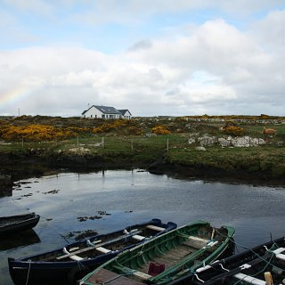
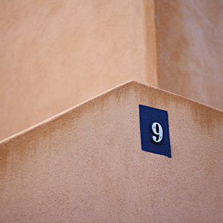

Alternate text for images - test page
This page provides fake content with images, some have a correct alt attribute, some don't, some have an empty alt.
This enables us to test the checkalts module
(0 alt, 0 title)
(1 alt, 1 title)
(empty alt, 0 title)
(1 alt, 0 title)
(0 alt, 0 title)

(1 alt, 0 title)

(0 alt, 0 title)